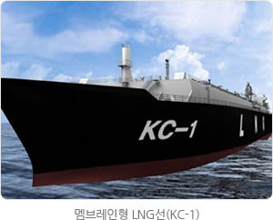
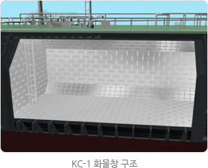
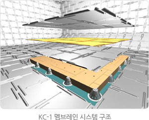
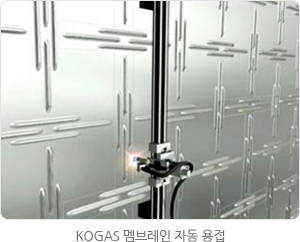

LNG기술
KC-1개발
한국형 LNG선 화물창(KC-1) 개발
LNG선 화물창(Cargo Containment)국산화 개발
우리공사는 2004년 국내 조선 3사와 LNG수송선 Cargo Containment(화물창) 개발사업을 추진하기 위한 공동기술개발협약을 체결하였고, 2004년 9월에는 정부의 중기거점기술개발사업 협약을 체결하여 현재 한국형 LNG선 화물창 개발사업을 수행 중에 있습니다.
이 협약은 1997년부터 한국가스공사가 추진해온 육상용 LNG저장탱크 국산화개발 사업을 통하여 확보된 멤브레인/단열재 Containment System 기술을 LNG수송선의 화물창에 적용하여 2004년부터 5년간 국내 고유모델을 개발하여 외국기술사에 지불되는 기술료를 절감하고 이에 따른 기자재 국산화, 설계 및 건조기술의 자립을 도모하는데 그 목적이 있습니다.
대표적인 고부가가치 선종의 하나인 LNG수송선의 핵심기술은 초저온의 액상화물을 격납하는 화물창으로 고도의 기술적 난이도와 안전성 및 신뢰성이 요구됩니다. LNG수송선의 화물창은 독립탱크 방식과 멤브레인 방식이 그 주류를 이루고 있으나 최근 LNG수송선의 대형화 추세에 따라 멤브레인 방식에 대한 선호도가 증가되고 있고, 이에 대한 원천기술은 프랑스의 GTT(Gaz Transport &Technigaz)에서 독점보유하고 있습니다.
따라서, 국내외 조선사에서는 외국기술사로부터 기술을 도입하여 LNG수송선을 건조하고 있으며, 선가의 약 4%에 해당하는 기술료 지불로 인하여 막대한 외화가 유출되고 있어 건조 수량이 증가할수록 지불해야할 기술료도 증가하여 국내 건조물량에 대한 기술료는 수 조원에 달하여 화물창의 국산화를 통한 국부 유출을 방지하는 일은 국가적으로 매우 긴급히 해결해야할 과제로 대두되고 있습니다. 또한, 최근 중국의 LNG선박 건조시장 진입 및 EU의 조선보조금 지원으로 가격경쟁구도가 더욱 심화될 것으로 전망됨에 따라 이러한 환경변화에 대응하고 또 기술료 부담을 줄이기 위하여 LNG선 화물창에 대한 원천기술의 확보가 절실한 실정입니다.
향후 LNG선 화물창(KC-1) 기술 개발이 완료되어 LNG선 건조가 연간 약 30척 정도 KC-1을 적용할 경우 해외 기술료 대체 효과는 약 2,880억원, 원가절감 효과는 약 1,920억원이며, 전후방산업의 생산유발효과는 84,000억 이상으로 기대됩니다.
1) LNG-RV : Regasification Vessel, 재기화 설비를 장착한 LNG선
2) LNG-FSRU : Floating Storage and Regasification Unit, 부유식 LNG 인수기지
3) LNG-FPSO : Floating production, Storage and Offloading, 부유식 LNG 액화 플랜트
이 협약은 1997년부터 한국가스공사가 추진해온 육상용 LNG저장탱크 국산화개발 사업을 통하여 확보된 멤브레인/단열재 Containment System 기술을 LNG수송선의 화물창에 적용하여 2004년부터 5년간 국내 고유모델을 개발하여 외국기술사에 지불되는 기술료를 절감하고 이에 따른 기자재 국산화, 설계 및 건조기술의 자립을 도모하는데 그 목적이 있습니다.
대표적인 고부가가치 선종의 하나인 LNG수송선의 핵심기술은 초저온의 액상화물을 격납하는 화물창으로 고도의 기술적 난이도와 안전성 및 신뢰성이 요구됩니다. LNG수송선의 화물창은 독립탱크 방식과 멤브레인 방식이 그 주류를 이루고 있으나 최근 LNG수송선의 대형화 추세에 따라 멤브레인 방식에 대한 선호도가 증가되고 있고, 이에 대한 원천기술은 프랑스의 GTT(Gaz Transport &Technigaz)에서 독점보유하고 있습니다.
따라서, 국내외 조선사에서는 외국기술사로부터 기술을 도입하여 LNG수송선을 건조하고 있으며, 선가의 약 4%에 해당하는 기술료 지불로 인하여 막대한 외화가 유출되고 있어 건조 수량이 증가할수록 지불해야할 기술료도 증가하여 국내 건조물량에 대한 기술료는 수 조원에 달하여 화물창의 국산화를 통한 국부 유출을 방지하는 일은 국가적으로 매우 긴급히 해결해야할 과제로 대두되고 있습니다. 또한, 최근 중국의 LNG선박 건조시장 진입 및 EU의 조선보조금 지원으로 가격경쟁구도가 더욱 심화될 것으로 전망됨에 따라 이러한 환경변화에 대응하고 또 기술료 부담을 줄이기 위하여 LNG선 화물창에 대한 원천기술의 확보가 절실한 실정입니다.




2008년 말 현재 우리나라는 LNG선 건조실적 뿐만 아니라 수주실적에서도 세계 1위의 조선강국입니다. 국내 조선사들은 1990년대 산업자원부와 한국가스공사에 의해 시작된 국적선 사업을 통하여 LNG 수송선 건조능력을 확보하였고, 이 건조실적에 힘입어 LNG선 수주량이 급증하여 2008년 10월 기준으로 세계적으로 운항 중인 281척의 LNG선 가운데 45%인 126척이 국내 조선사에서 건조되었고, 수주물량 면에서도 세계 발주 LNG선 97척 가운데 약 78%에 달하는 76척을 국내 조선사가 담당하고 있습니다. LNG 수송선은 1척당 약 2.2억불 이상의 고가 상품으로 연간 총 수주물량도 180억불 이상인 수출 효자종목 중 하나입니다.
향후 LNG선 화물창(KC-1) 기술 개발이 완료되어 LNG선 건조가 연간 약 30척 정도 KC-1을 적용할 경우 해외 기술료 대체 효과는 약 2,880억원, 원가절감 효과는 약 1,920억원이며, 전후방산업의 생산유발효과는 84,000억 이상으로 기대됩니다.
1) LNG-RV : Regasification Vessel, 재기화 설비를 장착한 LNG선
2) LNG-FSRU : Floating Storage and Regasification Unit, 부유식 LNG 인수기지
3) LNG-FPSO : Floating production, Storage and Offloading, 부유식 LNG 액화 플랜트